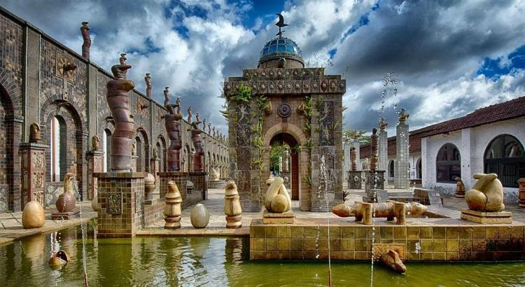
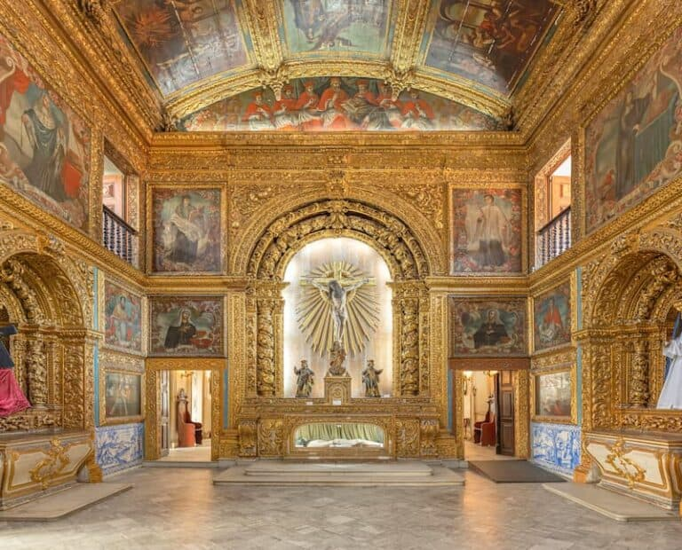

O instituto fica em um complexo arquitetônico em estilo medieval e guarda o Museu Castelo São João, a Pinacoteca, uma biblioteca, uma capela e um jardim de esculturas. Com um dos maiores acervos de armas brancas do mundo, reúne mais de 3 mil peças, sendo que a maioria veio da Europa e da Ásia. Ali também dá para admirar a coleção de pinturas, tapeçarias, armaduras, espadas, punhais e facas.
A primeira parada no bairro de Santo Antônio é a Capela Dourada. Considerada a igreja mais bonita da cidade, ela está entre os mais visitados pontos turísticos de Recife.
A beleza às vezes tem traços ríspidos e pode não ser uma qualidade que salta aos olhos imediatamente, mas deve ser buscada e valorizada com paciência.